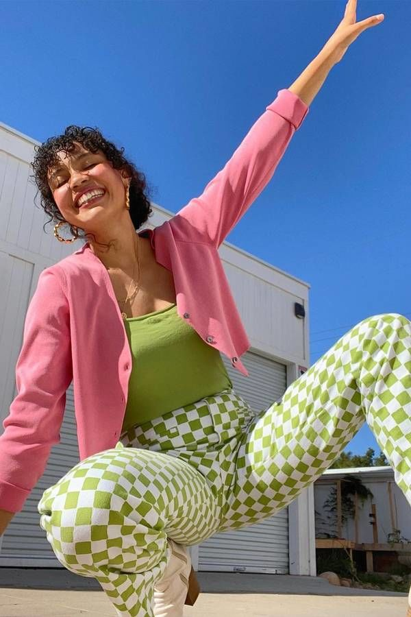
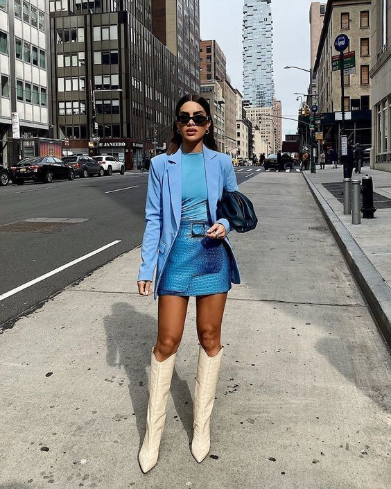
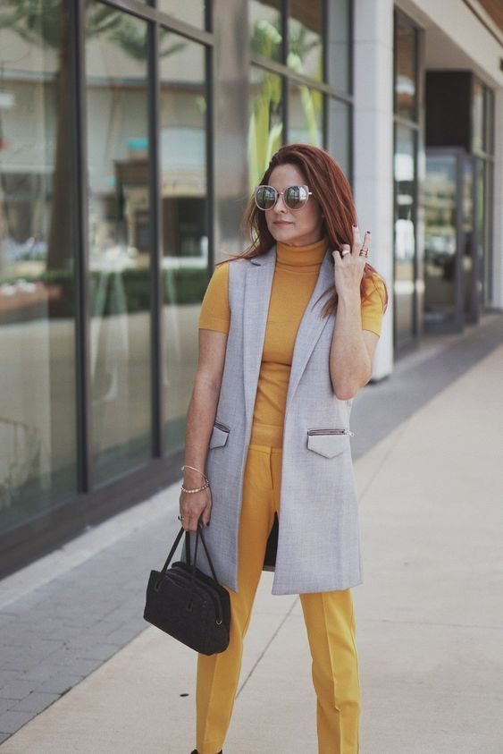
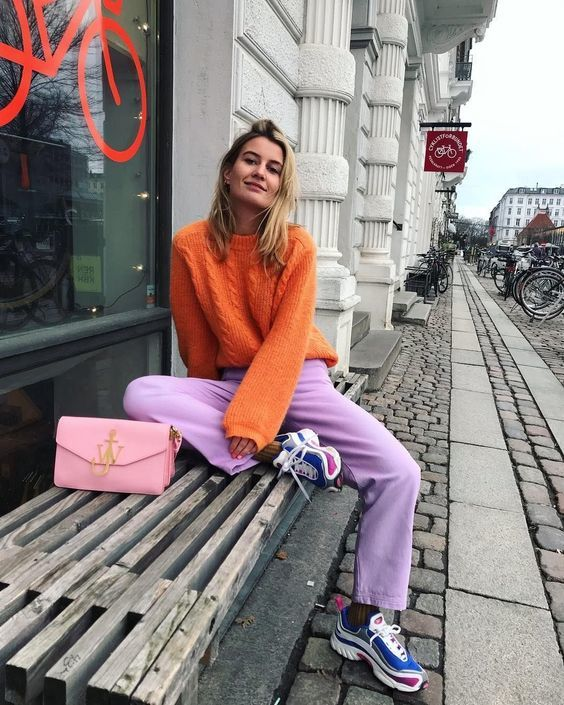
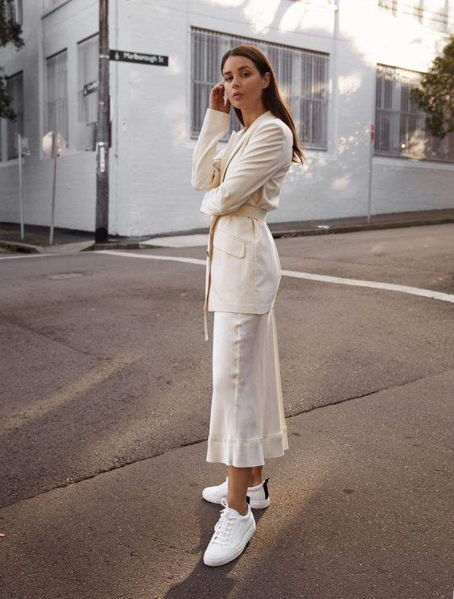
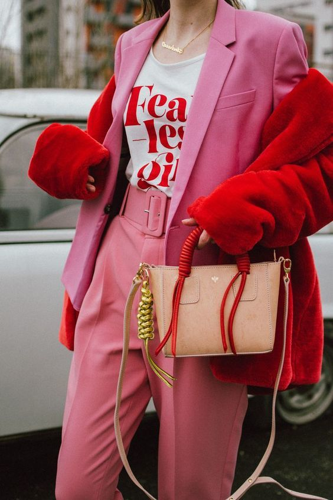

Abia aștepți primăvara ca să-ți poți etala noile ținute? Află ce culori se poartă în acest sezon și care sunt cele mai bune asocieri pentru ținute stylish.
Trendurile în materie de culori se schimbă de la un sezon la altul și este dificil să ții pasul cu noile tendințe. Dar ce poți face este să investești în haine colorate pe care le poți asocia astfel încât să creezi ținute care se potrivesc indiferent de sezon. Pentru primăvara 2021 se fac remarcate două trenduri diametral opuse: nuanțele intense și cele pastelate. Ca de fiecare dată, primăvara este sezonul culorilor deschise și luminoase, care se asortează perfect cu zilele însorite.
Brandurile cunoscute oferă o varietate largă de piese în nuanțe frumoase de primăvară, dar pe care le poți purta apoi oricând, indiferent de anotimp. Pentru a obține look-uri vesele și interesante de primăvară, asociază culori complementare sau contrastante care arată excelent împreună.
Sezonul acesta se poartă asocierile mai puțin obișnuite de culori deschise, dar și cele care oferă un aspect clasic, șic, precum tonurile neutre. Uneori, purtarea a două culori care în mod tradițional „nu se potrivesc” se poate dovedi o decizie foarte bună, rezultatul fiind un outfit modern și interesant.
De exemplu, numeroase fashioniste poartă tonuri de oranj și liliac în cadrul aceleiași ținute. Nu este o asociere pe care o faci zi de zi, din proprie inițiativă, tocmai de aceea arată atât de trendy și original.
Dacă nu știi ce culori să asociezi primăvara aceasta pentru a crea ținute deosebite, avem câteva idei pentru tine. Iată ce să încerci:
Verde lime si roz

Tonurile delicate de verde lime se potrivesc foarte bine cu nuanțele clasice de roz. Este o combinație de culori care inspiră veselie și o stare de bine, exact ce îți trebuie la început de primăvară pentru a combate astenia specifică sezonului.
Albastru deschis si crem

Nuanțele de albastru deschis oferă impresia unui look rece în asociere cu albul imaculat.
Însă arăta excelent în combinație cu tonurile delicate de crem, care adaugă mai multă căldură. Piesele și accesoriile în nuanțe de crem sunt întotdeauna o investiție bună pentru că pot fi purtate în orice sezon și nu se demodează niciodată.
Galben si gri

Culorile anului 2021 desemnate de Institutul Pantone sunt o nuanță de galben intens și una de gri, numite Illuminating, respectiv Ultimate Gray. Este una dintre cele mai simple și frumoase combinații de culori pentru acest an, care se potrivește perfect pentru primăvară.
Violet liliac si oranj

Această combinație de culori mai puțin obișnuită a devenit favorita influencerilor și fashionistelor. Te ajută să creezi un look statement care se face imediat remarcat.
Dacă nu îndrăznești să porți două piese diferite în aceste culori, atunci poți opta pentru o piesă cu imprimeu care include cele două culori, cum este, de exemplu, o rochie cu imprimeu floral pentru primăvară.
Alb si crem

În trecut, să porți albul în asociere cu crem era considerată o greșeală majoră. Dar de câțiva ani a devenit o „uniformă” pentru cele mai multe fashioniste, astfel că a devenit un trend important pe care îl vedem tot mai des.
Rosu si roz

O altă combinație surprinzătoare de culori care este în tendințe primăvara aceasta este cea dintre nuanțele intense de roșu și roz. Dacă aveai senzația că aceste două culori nu ar trebui purtate în aceeași ținută, fashionistele ne demonstrează că este o alegere excelentă, care te va ajuta să obții un look statement ce va atrage toate privirile.